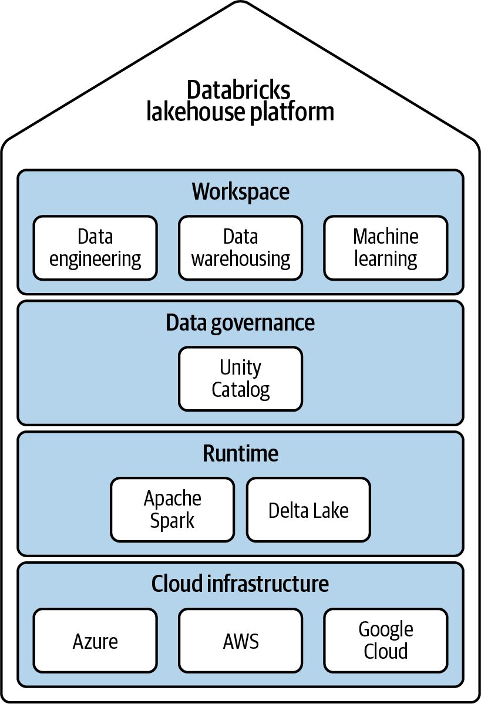

Databricks - PySpark: A Definitive Guide
What problem does Databricks solve?
Databricks offers a unified platform combining data lakes (flexible, cheap) and data warehouses (structured, governed, quality) known as a data lakehouse.
What is the high-level architecture?
- DB uses one of the cloud providers as underlying infrastructure
- Databricks Runtime - Preconfigured VM for cluster use
- Unity Catalog - Provides unified view and permissions
- DB Workspace - Any language accessing Databricks

Two Main Components:
- Control Plane: Web UI, Cluster Management, Workflows, Notebooks
- Data Plane: Storage and Compute/VMs
Why is Apache Spark so popular?
- Distributed data processing
- In-memory processing
- Multi-language support
- Batch and stream processing
- Flexible data handling
What is Delta Lake?
Delta Lake is an open-source transactional storage layer on top of cloud storage. It is a framework, not a medium or format like Parquet. It supports ACID guarantees.
What are the key commands used with Delta Lake?
USING DELTADESCRIBEOPTIMIZE- Compacts small files into larger onesOPTIMIZE <table_name> ZORDER BY <column_names>- Creates an index for the column, enabling skip scanning to directly reach relevant chunksDROP
What is the relational structure?
Storage --> Schema --> Table1, Table2Note: Databricks uses Hive’s metastore format and SQL compatibility, but replaces Hive’s compute engine with Spark and Delta Lake.
What are different SQL functions available?
INTERSECTMINUSPIVOTFILTERTRANSFORM
What are UDFs?
User-Defined Functions (UDFs) are custom functions that: - Accept parameters - Can be used as part of SQL queries - Can be described using the DESCRIBE command
How does Spark handle data streaming?
- Big Prerequisite: Data must be append-only (data can only be added to the source; existing data cannot be modified)
- Can integrate with various readers like files, queues, and Delta Lake tables
- Read and Write:
streamDF = spark.readStream.table("source_table")streamDF.writeStream.table("target_table")
- Modes: Continuous Mode and Triggered Mode
- Checkpointing at regular intervals
- Streaming guarantees: Fault recovery and exactly-once semantics
How can we handle incremental data ingestion?
- COPY INTO - Each execution only processes new files from the source location; previously ingested files are ignored
- Auto Loader - Employs checkpointing, stores metadata information, efficient at scale, can handle millions of files
What is Medallion Architecture?
As in medals, it has three levels: - Bronze - Silver - Gold
How to build Production Pipelines?
- Delta Live Tables (DLT) is a declarative ETL framework powered by Apache Spark for building reliable and maintainable data pipelines
- Running DLT Pipelines: Production and Development mode
- Change Data Capture (CDC)
What is Data Governance?
- Data Cataloging
- Data Security
- Monitoring and Auditing
- Data Lineage
- Data Discovery
What is Unity Catalog?
Traditional namespace: schema.table Unity Catalog namespace: catalog.schema.table
Pyspark
What are two main structures for storing data when performing manipulations? Resilient Distributed Data - RDD - Each record as independend object/row Dataframe - Records in columns
What are the various functions? from pyspark.sql.functions import split
write a simple pyspark snippet for word count “““import pyspark.sql.functions as F
results = ( spark.read.text(“./data/gutenberg_books/1342-0.txt”) .select(F.split(F.col(“value”), ” “).alias(”line”)) .select(F.explode(F.col(“line”)).alias(“word”)) .select(F.lower(F.col(“word”)).alias(“word”)) .select(F.regexp_extract(F.col(“word”), “[a-z’]*“, 0).alias(”word”)) .where(F.col(“word”) != ““) .groupby(”word”) .count() )”
What are the rules for succsessful join?
when to decide what type of UDF to use? 
Projects Extracted
Build a Medallion Architecture
Reference: Comparison of Ingestion MechanismsImplement DLT Pipeline